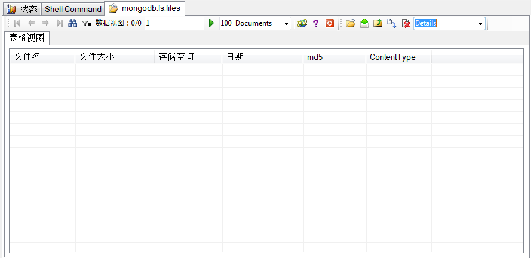

文件系统
初始化文件系统:
当您新建一个数据库后，默认是没有文件系统的，要使用文件系统，请先对文件系统进行初始化
选择一个数据库，然后通过右键菜单的“初始化文件系统”，进行文件系统的初始化
初始化完成之后，刷新一下树型数据库对象列表,fs.chunks and fs.files 这两个数据集将会被自动创建，这时你可以操作文件系统了
双击数据库对象列表中的GridFileSystem节点，右边的数据视图将会变成文件管理视图
你可以通过文件管理器视图的顶层工具栏或者右键菜单完成各种操作
(注意：如果你不是以管理员启动软件，文件图标可能无法正常显示)

上传文件/文件夹:
在上传文件/文件夹的时候，可以进行各种设定（你可以使用拖曳文件图标到列表视图的方法上传文件和文件夹）

当然你也可以在文件列表中，对于上传文件进行各种操作，甚至可以通过双击的方法打开文件